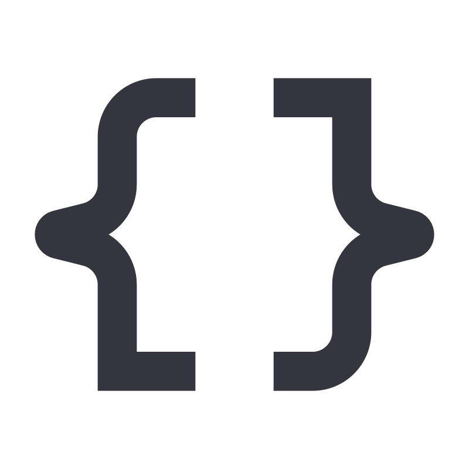

Teknologiat
Rakennettu parhailla työkaluilla.
Hyödynnämme uusimpia ja luotettavimpia teknologioita — ei trendejä trendien vuoksi, vaan teknologiaa joka kestää aikaa.
 Python
Python
 RAG / Vertex AI
RAG / Vertex AI
 Docker
Docker
 Modernit verkkosivut
Modernit verkkosivut
 PostgreSQL
PostgreSQL
 n8n
n8n

REST & API